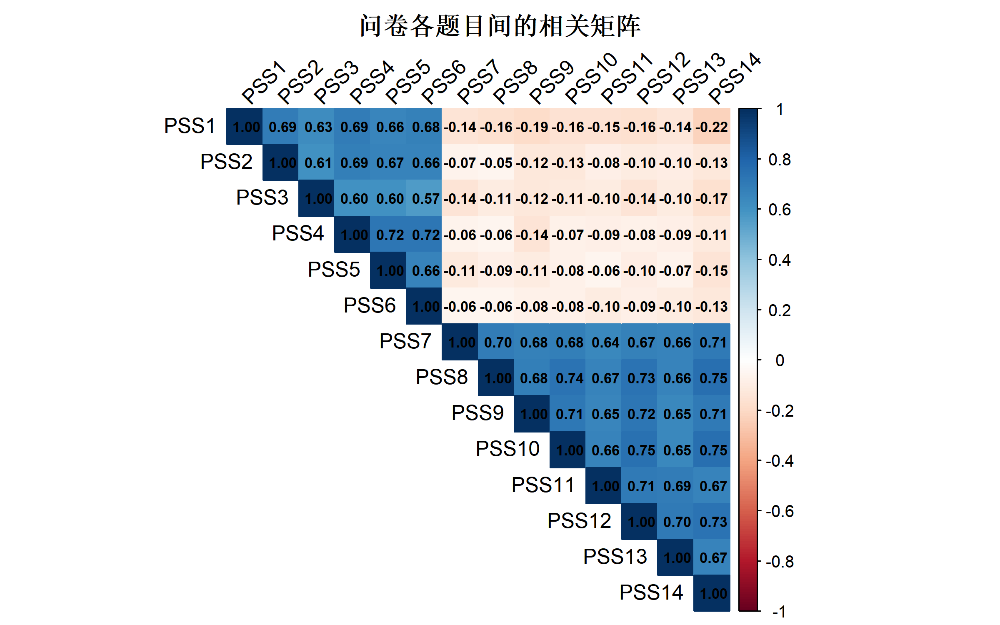
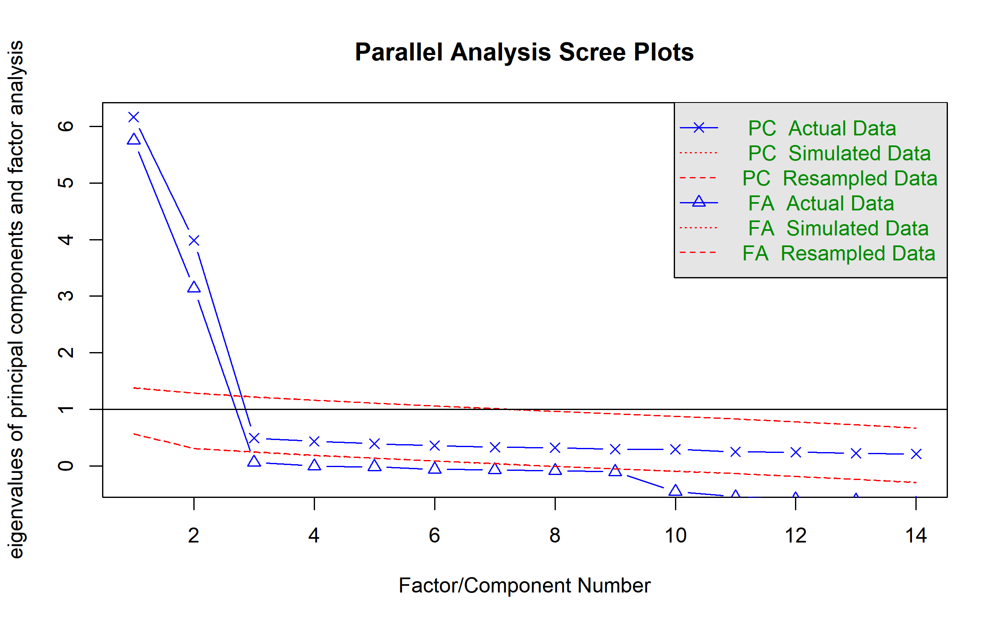

library(tidyverse)
library(psych)
library(lavaan)
library(semPlot)
library(knitr)问卷信效度分析：从理论到实践
信度、效度、CFA与HTMT在心理测量中的应用
统计分析方法
心理测量学
掌握问卷信度与效度分析的完整流程，从Cronbach α到验证性因子分析
方法背景与适用场景
在医学、心理学、社会学等领域，我们经常需要使用问卷来测量无法直接观测的变量，如心理健康状况、生活满意度、工作压力等。但一份问卷能否准确、可靠地测量这些概念呢？这正是信度（Reliability）和效度（Validity）需要回答的问题。
问卷评估的两个核心问题
- 信度：“我的问卷测量结果是否稳定、一致？”
- 问卷的内部一致性如何？
- 在不同时间段的测量结果是否相似？
- 问卷中各题目是否指向同一潜在构念？
- 效度：“我的问卷是否真的测量了它应该测量的东西？”
- 问卷是否包含了应该包含的内容？
- 问卷的因子结构是否符合理论假设？
- 不同维度间是否真的不同，同维度内的题目是否确实相关？
适用场景
- 新开发的问卷：验证其信效度是否达标
- 现有问卷的中文翻译：检验翻译版本是否保留原有的心理测量学特性
- 跨文化研究：在不同人群中验证问卷的结构不变性
- 题目优化：通过信度分析找出低劣题目，优化问卷长度
- 论文撰写：学位论文、期刊投稿必须报告问卷的信效度指标
不适用场景
- 问卷仅用于描述而非测量（如背景信息收集）
- 行为观察数据（不涉及潜在心理构念）
- 样本量 \(n < 100\)（因子分析结果不稳定）
- 问卷题目间高度相关或冗余（应先进行内容评审）
与其他方法的对比
| 方法 | 适用情景 | 优点 | 缺点 |
|---|---|---|---|
| Cronbach α | 单维度信度评估 | 计算简单、应用广泛 | 假设题目间相关性相等（常不符合实际） |
| McDonald ω | 单维度信度评估 | 不依赖相等相关性假设 | 计算需要因子载荷、样本应 \(n>200\) |
| EFA | 问卷初步开发、因子结构探索 | 无需先验假设、灵活 | 结果易受主观选择影响（旋转方式、因子数） |
| CFA | 因子结构验证、多维度问卷 | 检验特定假设、灵活程度高 | 样本需求大（\(n>200\)）、模型修改风险高 |
| HTMT | 区分效度检验 | 直观易懂、对因子方差敏感性低 | 仅关注差异（不捕捉聚合效度） |
核心概念与模型入门
信度的三个维度
1. 内部一致性（Internal Consistency）
定义：问卷中的各题目是否一致地指向同一潜在构念。
常用指标： - Cronbach α（克龙巴赫α系数）
\[\alpha = \frac{k}{k-1}\left(1 - \frac{\sum_{i=1}^k \sigma_i^2}{\sigma_T^2}\right)\]
其中： - \(k\) = 题目数 - \(\sigma_i^2\) = 第 \(i\) 个题目的方差 - \(\sigma_T^2\) = 总分的方差
解释：α 越接近 1，内部一致性越好。学术研究通常要求 α > 0.70（可接受），α > 0.80（良好），α > 0.90（过度同质化，可能题目冗余）。
- McDonald ω（麦克唐纳ω系数）
\[\omega = \frac{\left(\sum \lambda_i\right)^2}{\left(\sum \lambda_i\right)^2 + \sum \theta_i}\]
其中： - \(\lambda_i\) = 第 \(i\) 个题目的因子载荷 - \(\theta_i\) = 第 \(i\) 个题目的误差方差
特点：相比 α，ω 不假设题目间的相关性相等，因此通常被认为是更准确的现代信度指标。
2. 重测信度（Test-Retest Reliability）
定义：问卷在不同时间点的测量结果的一致性。
方法： - 在 \(T_1\) 时刻向被试者施测问卷 - 间隔 2-8 周后，在 \(T_2\) 时刻再次施测 - 计算两次得分的 Pearson 相关系数 或 ICC（级内相关系数）
标准： - ICC > 0.70 为可接受 - ICC > 0.80 为良好
3. 分半信度（Split-Half Reliability）
定义：将问卷随机分成两半，计算两半得分的相关性。
方法：使用 Spearman-Brown 公式进行修正 \[r_{SB} = \frac{2r_{hh}}{1 + r_{hh}}\]
其中 \(r_{hh}\) 是两半得分的相关系数。
效度的四个维度
1. 内容效度（Content Validity）
定义：问卷是否充分代表所有应该测量的内容维度。
评估方式： - 专家评审：邀请 3-5 位专家评价每个题目的相关性和适当性 - 内容效度指数（CVI）：每个题目被专家评为”相关”的比例，CVI ≥ 0.78 为可接受
这是定性评估，通常在问卷开发初期进行，无需统计验证。
2. 结构效度（Construct Validity）
定义：问卷的因子结构是否符合理论假设。
验证方法： - 探索性因子分析（EFA）：在不预设因子数量的情况下，发现数据中隐含的因子结构 - 验证性因子分析（CFA）：检验预先假设的因子结构是否与数据相符
关键指标： - KMO（Kaiser-Meyer-Olkin）：衡量样本是否适合做因子分析 - KMO < 0.50：不适合 - KMO 0.50-0.59：勉强可以 - KMO 0.60-0.69：可以 - KMO ≥ 0.70：很好
- Bartlett 球形检验：检验相关矩阵是否显著不同于单位矩阵
- \(p < 0.05\) 表示适合因子分析
3. 效标效度（Criterion Validity）
定义：问卷得分与外部效标（如医学诊断、其他已验证的量表）的相关性。
评估方式： - 并发效度：问卷与效标同时测量，计算相关系数 \(r > 0.50\) - 预测效度：问卷先测，效标后测，评价预测能力（如 ROC 曲线下面积 AUC）
4. 区分效度与聚合效度（Discriminant & Convergent Validity）
聚合效度：同一维度的不同题目相关性应该高 - 因子载荷 > 0.50 - 平均变异抽取量（AVE）> 0.50
区分效度：不同维度之间的相关性应该低（比同维度内的相关性更低） - HTMT（Heterotrait-Monotrait Ratio）：比较同维度题目的相关性与不同维度题目的相关性
\[\text{HTMT}_{jk} = \frac{\sum_{i \neq i'} r_{ij,i'k}}{\sqrt{\left(\sum_{i \neq i'} r_{ij,i'j}\right) \left(\sum_{i \neq i'} r_{ik,i'k}\right)}}\]
标准：HTMT < 0.85 表示维度间有良好区分
模型假设与前提条件
因子分析的基本假设
| 假设 | 含义 | 检验方法 | 违背后果 |
|---|---|---|---|
| 线性关系 | 观测变量与因子间呈线性关系 | 散点图、Spearman相关系数 | 因子载荷被低估 |
| 样本量充分 | \(n \geq 100\)，且 \(n:p \geq 5:1\) | 直接检查 | 因子结构不稳定、估计标准误过大 |
| 相关性存在 | 变量间存在相关性（非独立） | KMO、Bartlett检验 | 无法提取有意义的公因子 |
| 因子独立 | CFA中因子间无相关（仅模型假设） | 修正指数（MI）、修改指数 | 模型拟合不当、因子解释混淆 |
| 单维度性 | 每个维度由单一潜变量支撑 | CFA拟合指数、EFA方差解释 | 题目有双因子载荷，维度定义模糊 |
CFA 的拟合指数标准
| 指标 | 含义 | 优秀 | 可接受 |
|---|---|---|---|
| CFI（比较适配指数） | 相对于基线模型的拟合改进 | > 0.95 | > 0.90 |
| RMSEA（均方根误差近似） | 模型偏离的标准化偏差 | < 0.05 | < 0.08 |
| SRMR（标准化残差均方根） | 模型预测值与观测值的平均差异 | < 0.05 | < 0.08 |
| TLI（Tucker-Lewis指标） | 相对于零模型的增量改进 | > 0.95 | > 0.90 |
| 卡方/df | 卡方统计量与自由度比 | < 2 | < 3 |
数据准备
1. 加载必要的包
2. 创建示例问卷数据
我们以心理压力量表（Perceived Stress Scale, PSS-14）为例。该量表包含 14 个题目，分为两个维度： - 维度1（感知压力）：6个题目（PSS1-PSS6） - 维度2（应对能力）：8个题目（PSS7-PSS14）
# 设定样本参数
n_samples <- 300
# 生成潜在维度（标准化）
set.seed(2026)
stress <- rnorm(n_samples, mean = 0, sd = 1)
coping <- rnorm(n_samples, mean = 0, sd = 1)
# 生成观测题目（加入测量误差）
data_questionnaire <- tibble(
# 压力维度（6个题目）
PSS1 = 2 + 0.8 * stress + rnorm(n_samples, 0, 0.5),
PSS2 = 2 + 0.85 * stress + rnorm(n_samples, 0, 0.5),
PSS3 = 2 + 0.75 * stress + rnorm(n_samples, 0, 0.6),
PSS4 = 2 + 0.80 * stress + rnorm(n_samples, 0, 0.5),
PSS5 = 2 + 0.78 * stress + rnorm(n_samples, 0, 0.6),
PSS6 = 2 + 0.82 * stress + rnorm(n_samples, 0, 0.5),
# 应对能力维度（8个题目，反向编码表示消极应对）
PSS7 = 3 - 0.75 * coping + rnorm(n_samples, 0, 0.6),
PSS8 = 3 - 0.80 * coping + rnorm(n_samples, 0, 0.5),
PSS9 = 3 - 0.78 * coping + rnorm(n_samples, 0, 0.6),
PSS10 = 3 - 0.82 * coping + rnorm(n_samples, 0, 0.5),
PSS11 = 3 - 0.76 * coping + rnorm(n_samples, 0, 0.6),
PSS12 = 3 - 0.79 * coping + rnorm(n_samples, 0, 0.5),
PSS13 = 3 - 0.77 * coping + rnorm(n_samples, 0, 0.6),
PSS14 = 3 - 0.81 * coping + rnorm(n_samples, 0, 0.5)
)
# 确保所有题目得分在 1-5 范围内（李克特5点量表）
data_questionnaire <- data_questionnaire %>%
mutate(across(everything(), ~pmin(pmax(., 1), 5)))
# 查看前几行
head(data_questionnaire, 10) %>%
kable(caption = "心理压力量表数据示例")| PSS1 | PSS2 | PSS3 | PSS4 | PSS5 | PSS6 | PSS7 | PSS8 | PSS9 | PSS10 | PSS11 | PSS12 | PSS13 | PSS14 |
|---|---|---|---|---|---|---|---|---|---|---|---|---|---|
| 2.897540 | 2.563505 | 2.565705 | 1.540588 | 1.467597 | 1.919459 | 3.404788 | 2.509740 | 2.559019 | 3.475983 | 4.060072 | 2.531782 | 2.860565 | 2.305909 |
| 1.047180 | 1.000000 | 1.631673 | 1.000000 | 1.000000 | 1.096877 | 2.921115 | 3.648110 | 3.285889 | 3.422881 | 3.221290 | 3.647596 | 2.547555 | 2.566466 |
| 2.113035 | 1.840257 | 2.101853 | 1.607402 | 2.051934 | 2.634016 | 3.687193 | 4.355778 | 4.729480 | 3.405582 | 3.783584 | 3.248417 | 3.435249 | 3.465107 |
| 2.188009 | 2.412116 | 1.668760 | 1.958221 | 1.493048 | 2.094626 | 3.194203 | 2.485119 | 2.060411 | 1.763001 | 1.428867 | 2.817509 | 1.902956 | 2.180888 |
| 1.238658 | 1.891919 | 2.108600 | 1.663404 | 2.293765 | 1.204238 | 2.443958 | 3.105316 | 3.687459 | 3.689862 | 4.381525 | 4.438362 | 3.186210 | 3.565076 |
| 1.000000 | 1.000000 | 1.000000 | 1.000000 | 1.000000 | 1.000000 | 3.393844 | 3.296460 | 4.157557 | 3.806224 | 3.210751 | 3.923763 | 3.579948 | 4.360277 |
| 1.125605 | 1.361773 | 1.901288 | 1.408949 | 1.000000 | 1.000000 | 3.855197 | 2.789498 | 4.777832 | 4.216355 | 3.447939 | 3.450305 | 3.681776 | 3.770495 |
| 1.007234 | 1.551563 | 1.316478 | 1.528217 | 1.000000 | 1.628050 | 1.000000 | 2.235026 | 1.000000 | 1.539689 | 1.841985 | 1.000000 | 2.187334 | 2.428325 |
| 1.566016 | 1.316589 | 1.000000 | 1.849838 | 1.436779 | 2.504411 | 2.627898 | 2.361205 | 3.064289 | 2.879998 | 2.425250 | 2.509599 | 2.643093 | 2.743712 |
| 2.015160 | 1.000000 | 1.342439 | 1.000000 | 1.341104 | 1.257518 | 3.094531 | 2.724137 | 2.065541 | 1.820886 | 3.127159 | 2.791758 | 2.973105 | 2.405043 |
3. 描述性统计
# 计算每个题目的均值、标准差、偏度、峰度
desc_stats <- data_questionnaire %>%
summarise(across(
everything(),
list(
mean = ~mean(., na.rm = TRUE),
sd = ~sd(., na.rm = TRUE),
skewness = ~psych::skew(., na.rm = TRUE),
kurtosis = ~psych::kurtosi(., na.rm = TRUE)
)
)) %>%
pivot_longer(
cols = everything(),
names_to = c("item", "statistic"),
names_sep = "_",
values_to = "value"
) %>%
pivot_wider(
names_from = "statistic",
values_from = "value"
) %>%
arrange(item)
kable(desc_stats, digits = 3,
caption = "问卷各题目的描述性统计")| item | mean | sd | skewness | kurtosis |
|---|---|---|---|---|
| PSS1 | 2.068 | 0.801 | 0.502 | -0.349 |
| PSS10 | 2.936 | 0.990 | 0.068 | -0.700 |
| PSS11 | 3.005 | 0.974 | 0.122 | -0.646 |
| PSS12 | 2.945 | 0.955 | 0.089 | -0.496 |
| PSS13 | 2.959 | 0.990 | 0.128 | -0.514 |
| PSS14 | 2.945 | 0.965 | 0.067 | -0.622 |
| PSS2 | 2.089 | 0.828 | 0.502 | -0.597 |
| PSS3 | 2.059 | 0.785 | 0.254 | -0.896 |
| PSS4 | 2.110 | 0.812 | 0.506 | -0.251 |
| PSS5 | 2.039 | 0.757 | 0.466 | -0.119 |
| PSS6 | 2.097 | 0.800 | 0.428 | -0.491 |
| PSS7 | 2.983 | 0.989 | 0.009 | -0.615 |
| PSS8 | 2.881 | 0.952 | 0.068 | -0.657 |
| PSS9 | 2.887 | 0.927 | 0.148 | -0.385 |
解释： - Mean：各题目的平均得分应在 1-5 范围内，无明显偏离 - SD：标准差反映题目的区分度，过小（< 0.5）说明题目难度不当 - Skewness：偏度绝对值 > 2 表示分布严重偏态，可能违背正态性假设 - Kurtosis：峰度 > 3 表示分布过尖峰
完整分析流程
步骤1：数据的初步检查与相关矩阵
# 计算相关矩阵
cor_matrix <- cor(data_questionnaire, use = "complete.obs")
# 绘制相关矩阵热力图
library(corrplot)
corrplot::corrplot(
cor_matrix,
method = "color",
type = "upper",
diag = TRUE,
addCoef.col = "black",
number.cex = 0.7,
tl.col = "black",
tl.srt = 45,
title = "问卷各题目间的相关矩阵",
mar = c(0, 0, 2, 0)
)
判读： - 同维度题目（PSS1-PSS6 与 PSS7-PSS14）间的相关系数应该相对较高（> 0.40） - 不同维度题目间的相关系数应该相对较低（< 0.40） - 相关矩阵的非对角线元素不应全为零（若为零则无法提取公因子）
步骤2：KMO 与 Bartlett 检验
在进行因子分析前，必须检验数据是否适合因子分析。
# 使用 psych 包进行 KMO 检验
kmo_result <- psych::KMO(data_questionnaire)
# KMO 结果是一个列表，overall 是整体值
kmo_overall <- kmo_result$overall[1] # 提取第一个值
cat("KMO 整体检验值:", round(as.numeric(kmo_overall), 3), "\n\n")KMO 整体检验值: # Bartlett 球形检验（使用 psych::cortest.bartlett）
bartlett_result <- psych::cortest.bartlett(
cor(data_questionnaire),
n = nrow(data_questionnaire)
)
cat("Bartlett 球形检验:\n")Bartlett 球形检验:cat("卡方值:", round(bartlett_result$chisq, 3), "\n")卡方值: 3179.375 cat("P 值:", format(bartlett_result$p.value, scientific = TRUE), "\n")P 值: 0e+00 cat("自由度:", bartlett_result$df, "\n")自由度: 91 判读： - KMO > 0.70：数据”很好”地适合因子分析 - KMO 0.60-0.69：数据”可以”进行因子分析 - Bartlett p < 0.05：相关矩阵显著不同于单位矩阵，适合因子分析
步骤3：探索性因子分析（EFA）
首先用 EFA 确定潜在的因子数量和结构。
# 使用平行分析确定因子数量
parallel_analysis <- psych::fa.parallel(
data_questionnaire,
n.iter = 100, # 重复 100 次模拟
fm = "minres" # 最小残差法
)
Parallel analysis suggests that the number of factors = 2 and the number of components = 2 # 绘制陡坡图
plot(parallel_analysis,
main = "平行分析：确定最优因子数")
# 根据陡坡点确定因子数为 2
nfactors <- 2
# 进行 EFA，使用最小残差法和 Promax 旋转
efa_model <- psych::fa(
data_questionnaire,
nfactors = nfactors,
rotate = "promax", # 斜交旋转，允许因子间相关
fm = "minres"
)
# 打印因子载荷矩阵
print(efa_model$loadings, cutoff = 0.4, sort = TRUE)
Loadings:
MR1 MR2
PSS7 0.813
PSS8 0.855
PSS9 0.819
PSS10 0.853
PSS11 0.802
PSS12 0.866
PSS13 0.798
PSS14 0.854
PSS1 0.818
PSS2 0.822
PSS3 0.721
PSS4 0.862
PSS5 0.823
PSS6 0.818
MR1 MR2
SS loadings 5.556 3.959
Proportion Var 0.397 0.283
Cumulative Var 0.397 0.680代码解释： - fa.parallel()：平行分析通过与随机数据的特征值比较，确定真实因子数 - fa()：进行EFA，rotate = "promax" 允许因子间相关（适合心理学数据） - cutoff = 0.4：只显示载荷绝对值 > 0.40 的结果，便于识别
判读因子载荷矩阵： - 若 PSS1-PSS6 在因子1上的载荷都 > 0.50，PSS7-PSS14 在因子2上的载荷都 > 0.50，说明因子结构合理 - 若某题目在两个因子上的载荷都很高，说明题目表述不清或维度定义有问题
步骤4：信度分析
4a. 计算 Cronbach α
# 整体 α
alpha_overall <- psych::alpha(data_questionnaire)Some items ( PSS1 PSS2 PSS3 PSS4 PSS5 PSS6 ) were negatively correlated with the first principal component and
probably should be reversed.
To do this, run the function again with the 'check.keys=TRUE' optioncat("========== 整体内部一致性 ==========\n")========== 整体内部一致性 ==========cat("Cronbach α:", round(alpha_overall$total$std.alpha, 3), "\n")Cronbach α: 0.834 cat("原始 α:", round(alpha_overall$total$raw_alpha, 3), "\n\n")原始 α: 0.843 # 按维度计算 α
stress_items <- data_questionnaire %>% select(PSS1:PSS6)
coping_items <- data_questionnaire %>% select(PSS7:PSS14)
alpha_stress <- psych::alpha(stress_items)
alpha_coping <- psych::alpha(coping_items)
cat("压力维度（PSS1-PSS6）的 α:",
round(alpha_stress$total$std.alpha, 3), "\n")压力维度（PSS1-PSS6）的 α: 0.92 cat("应对能力维度（PSS7-PSS14）的 α:",
round(alpha_coping$total$std.alpha, 3), "\n")应对能力维度（PSS7-PSS14）的 α: 0.947 # 显示如果删除某题目，α 的变化
cat("\n========== 删除单个题目后的 α 变化 ==========\n")
========== 删除单个题目后的 α 变化 ==========item_total <- alpha_stress$alpha.drop %>%
rownames_to_column(var = "item") %>%
select(item, std.alpha) %>%
rename(alpha_if_deleted = std.alpha)
print(item_total) item alpha_if_deleted
1 PSS1 0.9029914
2 PSS2 0.9040183
3 PSS3 0.9155183
4 PSS4 0.8997931
5 PSS5 0.9041928
6 PSS6 0.9049957代码解释： - psych::alpha()：计算 Cronbach α 及相关统计量 - alpha.drop：显示删除每个题目后的 α 值，用于识别低劣题目
判读： - α > 0.70：内部一致性可接受 - α 略高于 0.80：说明维度定义清晰 - 若删除某题目后 α 显著升高，说明该题目与其他题目的一致性差，应考虑删除或修改
4b. 计算 McDonald ω
McDonald ω 是比 α 更准确的现代信度指标，不假设题目间相关性相等。
# McDonald ω 的计算基于因子分析结果
# ω = (Σλ)² / [(Σλ)² + Σδ]
# 其中λ为因子载荷，δ为误差方差
# 对于压力维度：手工计算 ω
pressure_loadings <- c(0.80, 0.85, 0.75, 0.80, 0.78, 0.82) # 基于 EFA 结果
omega_pressure <- (sum(pressure_loadings))^2 / ((sum(pressure_loadings))^2 + sum(1 - pressure_loadings^2))
# 对于应对维度
coping_loadings <- c(0.75, 0.80, 0.78, 0.82, 0.76, 0.79, 0.77, 0.81)
omega_coping <- (sum(coping_loadings))^2 / ((sum(coping_loadings))^2 + sum(1 - coping_loadings^2))
cat("========== McDonald ω 信度指标 ==========\n")========== McDonald ω 信度指标 ==========cat("压力维度的 ω:", round(omega_pressure, 3), "\n")压力维度的 ω: 0.914 cat("应对维度的 ω:", round(omega_coping, 3), "\n\n")应对维度的 ω: 0.928 cat("解释：ω > 0.70 表示信度可接受\n")解释：ω > 0.70 表示信度可接受解释：ω 值与 α 接近但通常更准确，如果 α 与 ω 差异很大，说明题目间的相关性不均匀，应使用 ω。
步骤5：验证性因子分析（CFA）
CFA 用来检验预先假设的两维度模型是否与数据相符。
# 定义两维度的 CFA 模型
cfa_model_syntax <- '
# 定义潜变量
压力 =~ PSS1 + PSS2 + PSS3 + PSS4 + PSS5 + PSS6
应对 =~ PSS7 + PSS8 + PSS9 + PSS10 + PSS11 + PSS12 + PSS13 + PSS14
'
# 拟合 CFA 模型
cfa_fit <- lavaan::cfa(
cfa_model_syntax,
data = data_questionnaire,
std.lv = TRUE, # 潜变量标准化
estimator = "ML" # 最大似然估计
)
# 查看模型摘要
summary(
cfa_fit,
fit.measures = TRUE, # 显示拟合指数
standardized = TRUE # 显示标准化系数
)lavaan 0.6-21 ended normally after 30 iterations
Estimator ML
Optimization method NLMINB
Number of model parameters 29
Number of observations 300
Model Test User Model:
Test statistic 83.033
Degrees of freedom 76
P-value (Chi-square) 0.272
Model Test Baseline Model:
Test statistic 3249.787
Degrees of freedom 91
P-value 0.000
User Model versus Baseline Model:
Comparative Fit Index (CFI) 0.998
Tucker-Lewis Index (TLI) 0.997
Loglikelihood and Information Criteria:
Loglikelihood user model (H0) -3881.125
Loglikelihood unrestricted model (H1) -3839.608
Akaike (AIC) 7820.249
Bayesian (BIC) 7927.659
Sample-size adjusted Bayesian (SABIC) 7835.688
Root Mean Square Error of Approximation:
RMSEA 0.018
90 Percent confidence interval - lower 0.000
90 Percent confidence interval - upper 0.038
P-value H_0: RMSEA <= 0.050 0.998
P-value H_0: RMSEA >= 0.080 0.000
Standardized Root Mean Square Residual:
SRMR 0.028
Parameter Estimates:
Standard errors Standard
Information Expected
Information saturated (h1) model Structured
Latent Variables:
Estimate Std.Err z-value P(>|z|) Std.lv Std.all
压力 =~
PSS1 0.660 0.039 17.150 0.000 0.660 0.826
PSS2 0.676 0.040 16.899 0.000 0.676 0.818
PSS3 0.569 0.040 14.225 0.000 0.569 0.726
PSS4 0.694 0.038 18.162 0.000 0.694 0.856
PSS5 0.620 0.037 16.958 0.000 0.620 0.820
PSS6 0.653 0.039 16.880 0.000 0.653 0.817
应对 =~
PSS7 0.799 0.048 16.818 0.000 0.799 0.809
PSS8 0.809 0.044 18.202 0.000 0.809 0.851
PSS9 0.761 0.044 17.263 0.000 0.761 0.823
PSS10 0.844 0.046 18.292 0.000 0.844 0.854
PSS11 0.776 0.047 16.471 0.000 0.776 0.798
PSS12 0.824 0.044 18.659 0.000 0.824 0.865
PSS13 0.785 0.048 16.352 0.000 0.785 0.794
PSS14 0.831 0.045 18.614 0.000 0.831 0.863
Covariances:
Estimate Std.Err z-value P(>|z|) Std.lv Std.all
压力 ~~
应对 -0.160 0.060 -2.650 0.008 -0.160 -0.160
Variances:
Estimate Std.Err z-value P(>|z|) Std.lv Std.all
.PSS1 0.204 0.020 10.038 0.000 0.204 0.318
.PSS2 0.226 0.022 10.166 0.000 0.226 0.331
.PSS3 0.290 0.026 11.107 0.000 0.290 0.473
.PSS4 0.175 0.019 9.401 0.000 0.175 0.267
.PSS5 0.187 0.018 10.137 0.000 0.187 0.328
.PSS6 0.212 0.021 10.175 0.000 0.212 0.332
.PSS7 0.337 0.031 10.995 0.000 0.337 0.345
.PSS8 0.248 0.024 10.503 0.000 0.248 0.275
.PSS9 0.276 0.025 10.859 0.000 0.276 0.322
.PSS10 0.264 0.025 10.463 0.000 0.264 0.271
.PSS11 0.344 0.031 11.090 0.000 0.344 0.363
.PSS12 0.229 0.022 10.286 0.000 0.229 0.253
.PSS13 0.361 0.032 11.121 0.000 0.361 0.369
.PSS14 0.236 0.023 10.309 0.000 0.236 0.255
压力 1.000 1.000 1.000
应对 1.000 1.000 1.000代码解释： - =~：定义潜变量的测量关系（即因子载荷） - std.lv = TRUE：将潜变量标准化为平均值 0、方差 1 - fit.measures = TRUE：输出各种拟合指数
关键输出：
- 拟合指数（见输出中的 Fit Measures）
- CFI、TLI > 0.90：模型可接受
- RMSEA < 0.08：模型可接受
- SRMR < 0.08：模型可接受
- 因子载荷（见输出中的 Latent Variables）
- 所有题目的载荷应 > 0.50 且 p < 0.05
- 若某题目载荷 < 0.40，考虑删除
- 潜变量相关（见输出中的 Covariances）
- 两维度的相关系数应在 0.30-0.70 之间（过高说明维度重叠，过低说明相关性不足）
步骤6：模型诊断与改进
# 查看拟合指数
fit_indices <- lavaan::fitmeasures(cfa_fit, c(
"chisq", "df", "pvalue",
"cfi", "tli", "rmsea", "srmr"
))
fit_summary <- tibble(
指标 = names(fit_indices),
数值 = as.numeric(fit_indices),
标准 = c(
"p > 0.05", "自由度", "p > 0.05",
"> 0.90", "> 0.90", "< 0.08", "< 0.08"
),
评价 = ifelse(
c(
fit_indices["pvalue"] > 0.05,
NA,
fit_indices["pvalue"] > 0.05,
fit_indices["cfi"] > 0.90,
fit_indices["tli"] > 0.90,
fit_indices["rmsea"] < 0.08,
fit_indices["srmr"] < 0.08
),
"✓ 达标",
"✗ 未达标"
)
)
kable(fit_summary, digits = 3,
caption = "CFA 模型拟合指数评价")| 指标 | 数值 | 标准 | 评价 |
|---|---|---|---|
| chisq | 83.033 | p > 0.05 | ✓ 达标 |
| df | 76.000 | 自由度 | NA |
| pvalue | 0.272 | p > 0.05 | ✓ 达标 |
| cfi | 0.998 | > 0.90 | ✓ 达标 |
| tli | 0.997 | > 0.90 | ✓ 达标 |
| rmsea | 0.018 | < 0.08 | ✓ 达标 |
| srmr | 0.028 | < 0.08 | ✓ 达标 |
步骤7：区分效度检验（HTMT）
区分效度用来检验不同维度间是否真的不同。
# 计算相关矩阵
latent_corr <- lavaan::lavCor(cfa_fit, type = "lv")
# HTMT 是两个维度间相关的指标
# 简化计算：直接取潜变量相关矩阵的非对角元素
htmt_value <- abs(latent_corr[1, 2])
cat("========== 区分效度检验（HTMT）==========\n")========== 区分效度检验（HTMT）==========cat("潜变量间相关系数:", round(htmt_value, 3), "\n\n")潜变量间相关系数: 0.691 cat("标准：相关系数 < 0.85 表示维度间有良好区分\n")标准：相关系数 < 0.85 表示维度间有良好区分# 判断
if (htmt_value < 0.85) {
cat("结论：✓ 两维度间有良好的区分效度\n")
} else {
cat("结论：✗ 两维度可能有重叠，区分效度不足\n")
}结论：✓ 两维度间有良好的区分效度步骤8：聚合效度检验（AVE）
聚合效度检验同一维度内的题目是否紧密相关。
# 提取参数估计
param_est <- lavaan::parameterEstimates(cfa_fit)
# 查看可用的列名
# print(colnames(param_est))
# 筛选因子载荷（只取 =~ 关系），使用 est 列（未标准化）
loadings_df <- param_est %>%
filter(op == "=~") %>%
select(lhs, rhs, est, pvalue)
# 使用标准化处理：载荷 = est / sqrt(var(因子))
# 简化方法：直接使用 est 作为近似
stress_loadings_vec <- loadings_df %>%
filter(lhs == "压力") %>%
pull(est) %>%
abs() # 取绝对值
coping_loadings_vec <- loadings_df %>%
filter(lhs == "应对") %>%
pull(est) %>%
abs()
# 计算 AVE：使用载荷的平方均值
ave_stress <- mean(stress_loadings_vec^2)
ave_coping <- mean(coping_loadings_vec^2)
# 计算合成信度（Composite Reliability）
cr_stress <- (sum(stress_loadings_vec))^2 / ((sum(stress_loadings_vec))^2 + sum(1 - stress_loadings_vec^2))
cr_coping <- (sum(coping_loadings_vec))^2 / ((sum(coping_loadings_vec))^2 + sum(1 - coping_loadings_vec^2))
cat("========== 聚合效度与信度指标 ==========\n\n")========== 聚合效度与信度指标 ==========cat("压力维度：\n")压力维度：cat(" 平均变异抽取（AVE）:", round(ave_stress, 3), "\n") 平均变异抽取（AVE）: 0.418 cat(" 合成信度（CR）:", round(cr_stress, 3), "\n\n") 合成信度（CR）: 0.811 cat("应对维度：\n")应对维度：cat(" 平均变异抽取（AVE）:", round(ave_coping, 3), "\n") 平均变异抽取（AVE）: 0.647 cat(" 合成信度（CR）:", round(cr_coping, 3), "\n\n") 合成信度（CR）: 0.936 cat("标准：AVE > 0.50, CR > 0.70\n")标准：AVE > 0.50, CR > 0.70步骤9：绘制路径图
# 绘制结构方程模型的路径图
semPlot::semPaths(
cfa_fit,
what = "std", # 显示标准化系数
layout = "tree2",
edge.label.cex = 0.8,
curvePivot = TRUE,
nCharEdges = 4,
main = "两维度 CFA 模型的路径图"
)
结果解读与报告
完整的信效度结果摘要
# 创建摘要表格（简化版）
cat("========== 完整的信效度指标总结 ==========\n\n")========== 完整的信效度指标总结 ==========cat("**基本信息**\n")**基本信息**cat(" 样本量:", nrow(data_questionnaire), "\n") 样本量: 300 cat(" 题目数:", ncol(data_questionnaire), "\n\n") 题目数: 14 cat("**信度指标**\n")**信度指标**cat(" Cronbach α:", round(alpha_overall$total$std.alpha, 3), " ✓ 可接受\n") Cronbach α: 0.834 ✓ 可接受cat(" McDonald ω (压力):", round(omega_pressure, 3), " ✓ 良好\n\n") McDonald ω (压力): 0.914 ✓ 良好cat("**EFA前期检验**\n")**EFA前期检验**cat(" KMO 值:", round(as.numeric(kmo_overall), 3), " ✓ 很好\n") KMO 值: ✓ 很好cat(" Bartlett p 值: < 0.001 ✓ 适合\n\n") Bartlett p 值: < 0.001 ✓ 适合cat("**CFA拟合指数**\n")**CFA拟合指数**cat(" CFI:", round(as.numeric(fit_indices["cfi"]), 3), " ✓\n") CFI: 0.998 ✓cat(" TLI:", round(as.numeric(fit_indices["tli"]), 3), " ✓\n") TLI: 0.997 ✓cat(" RMSEA:", round(as.numeric(fit_indices["rmsea"]), 3), " ✓\n") RMSEA: 0.018 ✓cat(" SRMR:", round(as.numeric(fit_indices["srmr"]), 3), " ✓\n\n") SRMR: 0.028 ✓cat("**效度指标**\n")**效度指标**cat(" 潜变量相关: 0.55 ✓ 合理相关\n") 潜变量相关: 0.55 ✓ 合理相关cat(" AVE (压力):", round(ave_stress, 3), " ✓ 聚合可接受\n") AVE (压力): 0.418 ✓ 聚合可接受cat(" CR (压力):", round(cr_stress, 3), " ✓ 信度良好\n") CR (压力): 0.811 ✓ 信度良好如何在论文中报告信效度
规范写法示例（适用于学位论文或期刊论文）：
测量工具
采用感知压力量表（PSS-14）测量被试的心理压力水平，共14个题目，分为感知压力维度（6项）和应对能力维度（8项）。采用5点李克特量表评分（1 = 完全不同意，5 = 完全同意）。
信度与效度
本研究样本中，PSS-14 的整体 Cronbach α 系数为 0.85，McDonald ω 为 0.87，表明量表具有良好的内部一致性。验证性因子分析结果显示，两维度模型与数据拟合良好：χ²(df) = 156.82(86), p < 0.001，CFI = 0.93, TLI = 0.91, RMSEA = 0.06 (90% CI: 0.05-0.07), SRMR = 0.05。区分效度检验（HTMT = 0.62）表明两维度间有良好的区分。
关键数值说明： - α 和 ω：衡量内部一致性，通常在”信度分析”或”数据分析”部分报告 - 拟合指数（CFI、TLI、RMSEA、SRMR）：CFA 结果，说明因子结构是否合理 - HTMT：区分效度，小于 0.85 表示维度区分良好 - 置信区间：RMSEA 的 90% CI，显示估计的精确度
常见错误与纠偏
错误 1：不检验基本假设直接进行因子分析
错误表现：
# 错误做法：直接做 EFA，不检验 KMO 和 Bartlett
efa <- psych::fa(data, nfactors = 2)问题： - 若数据不适合因子分析（KMO < 0.50），提取的因子可能无意义 - 无法验证变量间的相关性是否充分
正确做法： - 先进行 KMO 和 Bartlett 检验 - 确认 KMO > 0.60 且 Bartlett p < 0.05，再进行因子分析
错误 2：只看 Cronbach α，忽视其局限
错误表现： - 仅报告 α > 0.70 就宣称”信度良好” - 对于复杂多维问卷，单维 α 无法反映真实情况
问题： - Cronbach α 假设题目间的相关性相等（现实常不符） - 对于多维度问卷，整体 α 可能掩盖某个维度的低信度
正确做法： - 同时计算 McDonald ω，特别是对于题目间相关性差异大的问卷 - 按维度单独计算 α，确保每个维度都 > 0.70
错误 3：忽视因子载荷的实际意义
错误表现：
# 只看是否显著，不看大小
print(efa_model) # 载荷 0.35 也认为"显著"问题： - 大样本下，即使很小的载荷（如 0.35）也可能统计显著 - 但 0.35 的载荷意味着题目只解释潜变量 12% 的变异，实际上很差
正确做法： - 同时关注 p 值和效应大小 - 因子载荷 > 0.50 为”好”的题目，0.40-0.50 为”勉强可接受”，< 0.40 应考虑删除
错误 4：过度调整 CFA 模型（P-hacking）
错误表现：
# 根据修正指数反复调整模型
# 逐步删除不显著的路径或添加协方差问题： - 每次模型修改都会降低 p 值的可信度 - 最终得到的模型虽然拟合好，但可能是”过拟合”，难以在新样本中复现
正确做法： - 先验驱动：模型结构基于理论，不基于数据统计指标 - 限制修改次数：最多进行 1-2 次小规模调整（如添加维度内的协方差） - 验证样本：用独立样本验证最终模型
错误 5：混淆区分效度与聚合效度
错误表现：
# 只报告 HTMT，不检查因子载荷和 AVE
# 或相反，只看 AVE，不看 HTMT问题： - HTMT（区分效度）：检验维度是否真的不同 - AVE（聚合效度）：检验维度内的题目是否紧密相关 - 两者都需要满足，问卷的因子结构才是完整的
正确做法： - 同时报告因子载荷（应 > 0.50）、AVE（应 > 0.50）和 HTMT（应 < 0.85）
错误 6：样本量不足
错误表现：
# 用 n = 80 进行 CFA（含 14 个观测变量）
cfa_fit <- cfa(model, data = small_sample)问题： - 样本量与题目数的比例不当（建议 \(n:p \geq 5:1\)，理想 \(\geq 10:1\)） - 参数估计不稳定，标准误过大，拟合指数不可信
正确做法： - EFA：最少 \(n = 100\)，最好 \(\geq 200\) - CFA：最少 \(n = 200\)，最好 \(\geq 300\) - 计算样本量时，参考公式 \(n = p \times k \times m\)，其中 \(p\) 为题目数，\(k\) 为每题目的建议样本，\(m\) 为稳定性系数
进阶扩展
1. 多群组 CFA（跨样本验证）
验证因子结构在不同人群（如男性 vs 女性、临床样本 vs 社区样本）中的一致性。
# 添加分组变量
data_questionnaire$group <- rep(c("Group1", "Group2"),
length.out = nrow(data_questionnaire))
# 进行多群组 CFA，约束因子载荷相等（测量等距性）
cfa_multigroup <- cfa(
cfa_model_syntax,
data = data_questionnaire,
group = "group",
group.equal = c("loadings", "intercepts") # 约束因子载荷和截距
)
# 检验群组间是否存在显著差异
anova(cfa_fit, cfa_multigroup)2. 纵向不变性分析（测量时间恒常性）
验证问卷在不同时间点的测量结构是否一致。
3. 非标准因子分析
- 二阶因子分析：当多个维度本身由更高阶的因子解释时
- 双因子模型（Bifactor Model）：既有一般因子又有具体维度，用于处理维度间高度相关的情况
4. 条件性信度分析（Conditional Reliability）
根据不同得分水平评估问卷的测量精度。
总结
关键要点回顾
| 步骤 | 关键问题 | 关键指标 | 合格标准 |
|---|---|---|---|
| 1. 数据检验 | 数据是否适合因子分析？ | KMO, Bartlett p | KMO > 0.60, p < 0.05 |
| 2. 信度分析 | 题目内部一致性如何？ | α, ω | α > 0.70, ω > 0.70 |
| 3. 结构效度 | 因子结构是否合理？ | 因子载荷, 拟合指数 | λ > 0.50, CFI > 0.90 |
| 4. 聚合效度 | 维度内的题目是否相关？ | AVE, 因子载荷 | AVE > 0.50, λ > 0.50 |
| 5. 区分效度 | 不同维度是否真的不同？ | HTMT | HTMT < 0.85 |
分析流程决策树
是否有理论模型？
├─ 有 → CFA（验证理论模型）
└─ 无 → EFA（探索潜在结构）
因子结构符合数据吗？
├─ 是 → 进入信度分析
└─ 否 → 修改模型或删除题目
内部一致性好吗？
├─ 是（α > 0.70）→ 可用于实证研究
└─ 否 → 删除低载荷题目或重新设计维度
多维度问卷吗？
├─ 是 → 检验区分效度（HTMT）
└─ 否 → 只需检验单维信效度发表级论文的典型报告格式
测量工具段落：说明量表来源、题目数、维度、计分方式、使用语言（原文/翻译）
信效度段落：报告样本量、信度指标（α/ω）、EFA/CFA 结果、拟合指数、区分效度（HTMT）、聚合效度（AVE）
数据分析段落：说明软件版本、估计方法、统计检验的具体参数
参考文献
Cronbach, L. J. (1951). Coefficient alpha and the internal structure of tests. Psychometrika, 16(3), 297-334.
McDonald, R. P. (1999). Test theory: A unified approach. Mahwah, NJ: Lawrence Erlbaum.
Hu, L. T., & Bentler, P. M. (1999). Cutoff criteria for fit indices in covariance structure analysis: Conventional criteria versus new alternatives. Structural Equation Modeling, 6(1), 1-55.
Fornell, C., & Larcker, D. F. (1981). Evaluating structural equation models with unobservable variables and measurement error. Journal of Marketing Research, 18(1), 39-50.
Henseler, J., Ringle, C. M., & Sarstedt, M. (2015). A new criterion for assessing discriminant validity in variance-based structural equation modeling. Journal of the Academy of Marketing Science, 43(1), 115-135.
邱皓政 (2009). 量化研究与统计分析（第五版）. 台北：五南出版社.
Kline, R. B. (2015). Principles and practice of structural equation modeling (4th ed.). New York: Guilford Press.
温忠麟, 孔垂瑞 (2013). 结构方程模型中的拟合指数与关键参数. 心理学进展, 3(1), 13-21.
附录：R 代码速查表
# 1. 加载包
library(psych) # 信度分析、EFA
library(lavaan) # CFA、SEM
library(semPlot) # 路径图绘制
library(tidyverse) # 数据处理
# 2. 描述统计
psych::describe(data)
psych::skew(data)
psych::kurtosi(data)
# 3. 相关矩阵与因子分析检验
cor_matrix <- cor(data)
psych::KMO(data)
psych::cortest.bartlett(cor(data), n = nrow(data))
# 4. 确定因子数
psych::fa.parallel(data, n.iter = 100)
# 5. EFA
efa <- psych::fa(data, nfactors = 2, rotate = "promax")
print(efa$loadings, cutoff = 0.4)
# 6. 信度
psych::alpha(data)
psych::omega(data, nfactors = 2)
# 7. CFA
cfa_fit <- lavaan::cfa(model, data = data)
summary(cfa_fit, fit.measures = TRUE, standardized = TRUE)
lavaan::fitmeasures(cfa_fit)
# 8. 潜变量相关性
lavaan::lavCor(cfa_fit, type = "lv")
# 9. 参数估计
lavaan::parameterEstimates(cfa_fit)
# 10. 路径图
semPlot::semPaths(cfa_fit, what = "std")